Restauração de energia · em operaçãoRestauração de energia · concluídoEmergência de refrigeração · inicial
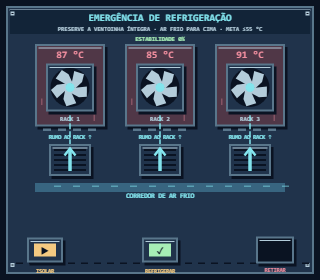
Emergência de refrigeração · em operação
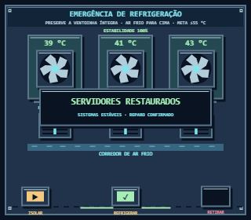
Emergência de refrigeração · concluídoBalanceamento de processamento · inicial
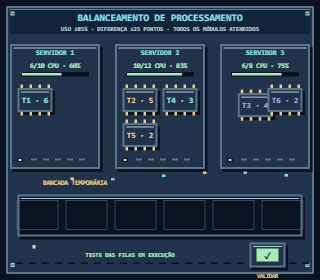
Balanceamento de processamento · em operação
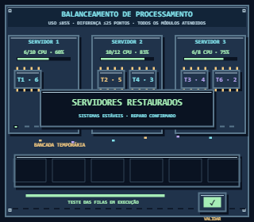
Balanceamento de processamento · concluídoRestauração de energia · inicialRestauração de energia · em operaçãoRestauração de energia · concluídoAtivação do núcleo · inicial
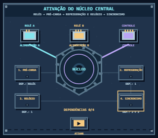
Ativação do núcleo · em operaçãoAtivação do núcleo - onda de energiaAtivação do núcleo · concluídoBalanceamento de processamento · inicial
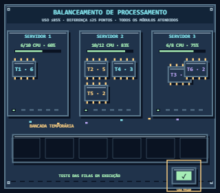
Balanceamento de processamento · em operação
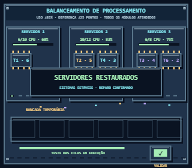
Balanceamento de processamento · concluídoAtivação do núcleo · inicialAtivação do núcleo · em operação
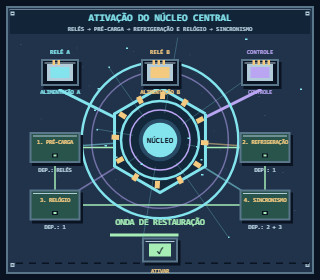
Ativação do núcleo - onda de energiaAtivação do núcleo · concluído
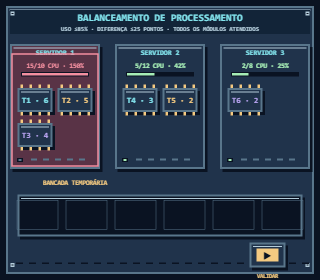
Balanceamento de processamento · inicial
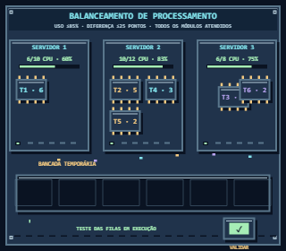
Balanceamento de processamento · em operação
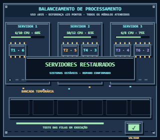
Balanceamento de processamento · concluído
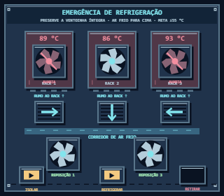
Emergência de refrigeração · inicial
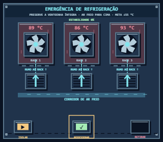
Emergência de refrigeração · em operaçãoEmergência de refrigeração · concluído
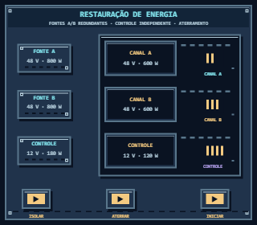
Restauração de energia · inicialRestauração de energia · em operação
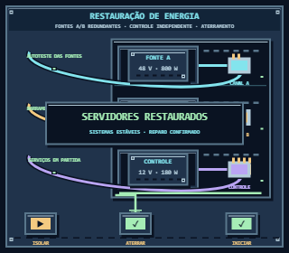
Restauração de energia · concluídoEmergência de refrigeração · inicial
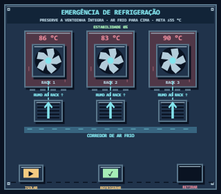
Emergência de refrigeração · em operaçãoEmergência de refrigeração · concluído
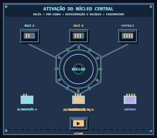
Ativação do núcleo · inicialAtivação do núcleo · em operaçãoAtivação do núcleo - onda de energia